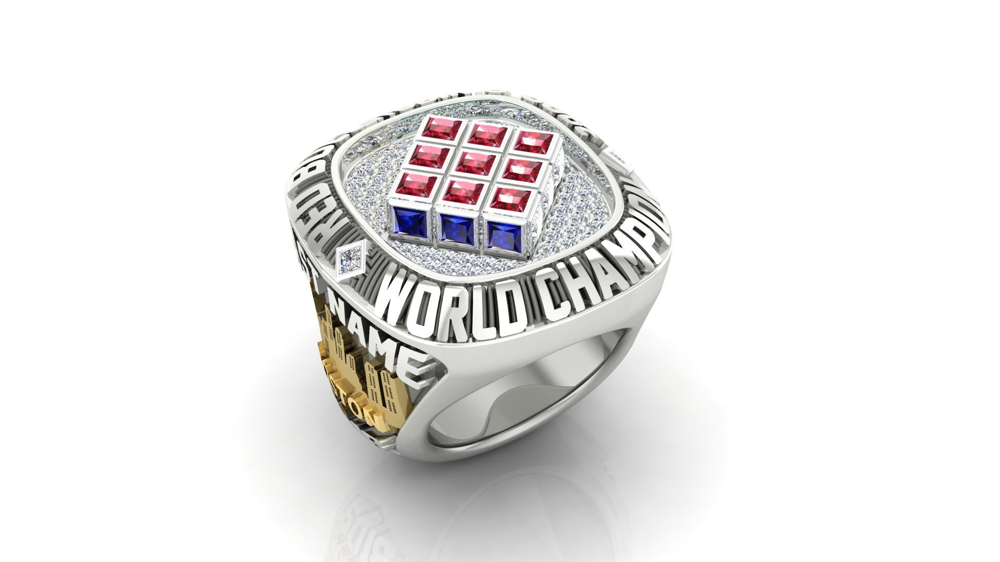
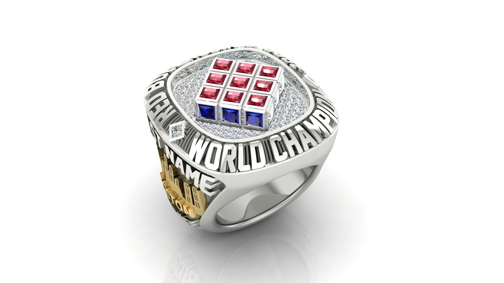
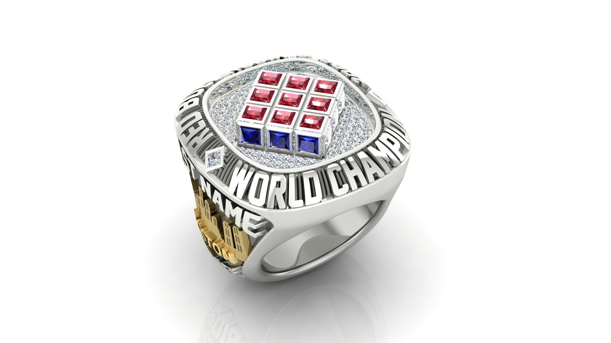
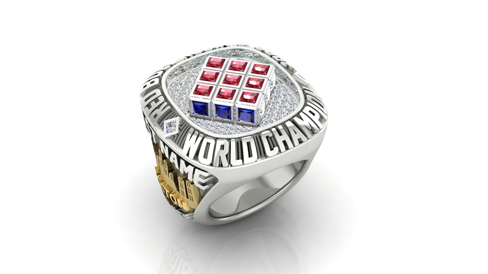

Picture
 



Rubik's Cube Inducted 2014 Rubik's Cube Hungarian design teacher and serious puzzler Erno Rubik assembled his first cube puzzle in 1974 and called it the Magic Cube. After a toy agent pitched the puzzle to Ideal Toy & Novelty Company, it renamed the puzzle Rubik’s Cube and began putting it in stores in 1980. Soon puzzlers all over the world wanted to solve the cube. Within two years they bought one hundred million of them, making Rubik’s Cube the title of most popular puzzle in history. Its success fostered hundreds of spin-off products, from best-selling books on how to solve it to patent-infringing look-alikes by other manufacturers. Though media first circulated a story about Rubik designing the cube to help teach students about three-dimensional objects, Rubik himself later acknowledged that he purposefully set out to design a puzzle based on geometry. The 27 tiny cubes called “cubies” produced a truly challenging puzzle. Each carried one of six colors, and when assembled they formed a square. Rubik’s challenge was figuring a way to allow the cubies to slide and rotate alongside one another while holding together as a unit. His key insight lay in realizing that if the individual blocks hinged on a rounded core, they could move freely while maintaining the shape of a cube. Young puzzlers, known as “cubers,” are attracted to the seeming simplicity of the puzzle, and are often skilled at spotting the patterns—cubers call them algorithms—necessary to solve the cube. Since 2003, cube-solving speed records, held by “speedcubers,” have been governed by the World Cube Association. Devoted to fairness and fun, the Association maintains records for blindfolded, one-handed, and fewest moves to solve, among others.